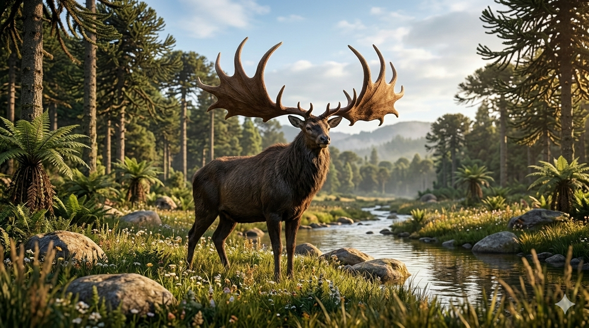

מגלוצרוס
The Giant Deer: Megaloceros giganteus

תיק מחקר: נתונים אבולוציוניים
תקופת פעילות
פליסטוקן עד תחילת ההולוקן
נפוץ במיוחד בתקופת הקרח המאוחרת; שרידים מאוחרים מעידים שחלק מהאוכלוסיות שרדו גם לאחר סוף הפליסטוקן.
מסה ומשקל
כ-450 עד 700 ק"ג
אחד האיילים הגדולים ביותר שהתקיימו אי פעם, דומה בגובהו לאייל קורא גדול אך בעל מבנה גוף רחב ומרשים.
ממדים וקרניים
עד כ-2.1 מטר בכתף
מוטת הקרניים של הזכרים יכלה להגיע לכמעט 4 מטרים — מהגדולות ביותר הידועות בעולם החי.
מיקום גיאוגרפי
אירופה וצפון אסיה
לא היה באמת "אירי" בלבד: שרידים נמצאו מאירלנד ובריטניה ועד סיביר, אך הביצות האיריות שימרו מאובנים רבים במיוחד.
סיווג טקסונומי קריטי
יונק פרסתן — Cervidae / Megaloceros
המגלוצרוס היה אייל אמיתי, לא אייל קורא ולא "אלק" אמריקאי. הכינוי האנגלי Irish Elk מטעה: הוא היה קרוב יותר לאיילים ממשפחת הצבאים מאשר לאייל הקורא, והיה נפוץ הרבה מעבר לאירלנד.
01 // ניתוח אטימולוגי נרחב
| החלק בשם | שפת מקור | פירוש ומשמעות היסטורית |
|---|---|---|
| Megalo- | יוונית עתיקה | גדול / עצום החלק הראשון בשם מתאר את גודלו יוצא הדופן של בעל החיים, ובעיקר את הרושם הבלתי נשכח של הקרניים הענקיות. מגלוצרוס לא היה רק "אייל גדול"; הוא היה סמל של מוגזמות אבולוציונית — גוף גדול וקרניים שהפכו לאחד מסימני ההיכר המפורסמים ביותר של עידן הקרח. |
| -ceros | יוונית עתיקה | קרן החלק השני מתייחס לקרניים. השם Megaloceros פירושו בקירוב **"בעל הקרניים הגדולות"**. זהו שם מדויק במיוחד, מפני שהקרניים הן המאפיין המרכזי שהבדיל אותו כמעט מכל אייל אחר בהיסטוריה. |
| giganteus | לטינית | ענקי שם המין מדגיש את ממדי הגוף ואת הקרניים. המשמעות המלאה של השם המדעי היא בקירוב: **"בעל הקרניים הגדולות הענקי"** — שם שמתאר היטב את אחד האיילים הדרמטיים ביותר שחיו אי פעם. |
02 // תולדות הגילוי: האייל שהפך לסמל אירי
ביצות אירלנד ושימור יוצא דופן
אף שהמגלוצרוס חי באזורים נרחבים של אירופה ואסיה, אירלנד הפכה למקום המזוהה איתו ביותר בגלל שפע השרידים שנמצאו בביצות ובמשקעי אגמים. תנאי השימור באזורים אלה שמרו גולגולות, עצמות וקרניים עצומות באופן מרשים, ולכן שלדי מגלוצרוס הפכו למוצגים מפורסמים במוזיאונים, טירות ובתי אצולה.
השם המטעה: “Irish Elk”
הכינוי "אייל אירי" או Irish Elk נולד מהעובדה שבאירלנד נמצאו מאובנים רבים במיוחד, אך הוא מטעה בשני מובנים: המגלוצרוס לא חי רק באירלנד, והוא גם לא היה "Elk" במובן הזואולוגי המדויק. למעשה, מדובר באייל ענק ממשפחת הצבאיים, שהפך לסמל של עידן הקרח בזכות קרניו האדירות ולא בזכות קשר מיוחד לאירלנד בלבד.
מצב הממצאים: גולגולות עם כתרים עצומים
המגלוצרוס מוכר למדע ממספר גדול יחסית של שרידים, ובמיוחד מגולגולות מחוברות לקרניים. השימור המרשים של הקרניים אפשר לחוקרים לבחון לא רק את גודלן, אלא גם את תפקידן החברתי, המיני והאקולוגי.
- קרניים כבדות ורחבות במיוחד: הקרניים של הזכרים לא היו רק ארוכות, אלא גם שטוחות, מסועפות ורחבות. בחלק מהממצאים מוטת הקרניים הגיעה לכמעט 4 מטרים. זהו אחד המקרים המרשימים ביותר של התפתחות תכונה ראוותנית בעולם היונקים.
- שלדים שלמים ממוזיאונים וביצות: מגלוצרוס מוצג במוזיאונים רבים בעולם משום שחלק מהמאובנים השתמרו בצורה מרשימה במיוחד. גולגולות עם קרניים שלמות אפשרו למדענים לשחזר את תנוחת הראש, מבנה הצוואר, והעומס המכני שנדרש כדי לשאת את הקרניים.
- עדויות לאורח חיים פתוח: צורת הקרניים העצומה אינה מתאימה ליער סבוך במיוחד, שבו הן היו מסתבכות בצמחייה. לכן חוקרים רבים רואים במגלוצרוס בעל חיים של שטחים פתוחים יחסית — ערבות עשב, מישורים קרים ושולי יערות פתוחים.
אקולוגיה וביומכניקה: מחיר הקרניים הגדולות
המגלוצרוס היה דוגמה קלאסית לבעל חיים שבו תכונה אחת — הקרניים — הפכה למרכז כל הדיון האבולוציוני. הקרניים הענקיות כנראה שימשו לתצוגה, מאבקי זכרים, הרתעה ובחירת בני זוג, אך הן גם דרשו משאבים רבים ונשיאת משקל משמעותית.
ברירה זוויגית
אחת ההשערות המרכזיות היא שהקרניים העצומות התפתחו בעיקר בגלל ברירה זוויגית: זכרים בעלי קרניים גדולות יותר יכלו להרשים נקבות, להפחיד יריבים, או לנצח בקרבות טקסיים. כלומר, הקרניים לא היו בהכרח "כלי הישרדות" פשוט, אלא מסר ביולוגי אדיר: אני חזק, בריא ומסוגל לשאת את העומס הזה.
הכחדה: אקלים, צמחייה ואדם
הכחדת המגלוצרוס אינה מוסברת בהכרח על ידי גורם אחד בלבד. שינויי אקלים בסוף עידן הקרח שינו את בתי הגידול, את הצמחייה ואת זמינות המזון. עבור בעל חיים גדול, הזקוק למזון רב ולמינרלים הדרושים לגידול קרניים אדירות, שינוי כזה היה עלול להיות קריטי.
ייתכן שגם ציד ולחץ מצד בני אדם תרמו לירידה באוכלוסיות, במיוחד באזורים שבהם בתי הגידול הצטמצמו. לכן המגלוצרוס נחשב דוגמה חשובה להכחדת מגפאונה: שילוב של שינוי סביבתי, דרישות אנרגטיות גבוהות, ורגישות של בעלי חיים גדולים לשינויים מהירים.